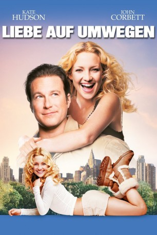
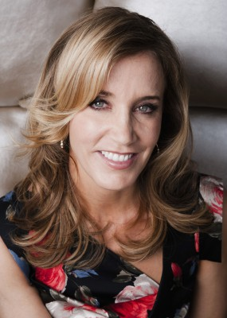

#5510 Liebe auf Umwegen
Alternativ: Raising Helen
 
 IMDB-Wertung: 6.0 / 10
IMDB-Wertung: 6.0 / 10  Metascore: 0
Metascore: 0 
Helen die junge und ambitionierte Assistentin einer Model-Agentur, sieht sich vor eine unerwartete Aufgabe gestellt: Als ihre Schwester und ihr Schwager bei einem Unfall ums Leben kommen, wird ihr das Sorgerecht für deren drei Kinder übertragen. Das bringt Helens Alltag völlig aus dem Gleichgewicht: Nicht nur muss sie in ein weniger schickes Stadtviertel von New York umziehen, sie kann sich auch nicht mehr mit voller Power um ihre Karriere kümmern. Zum Glück freundet sie sich mit Pastor Dan an, der sie liebevoll unterstützt...
Jahr: 2004
Dauer: 119 Minuten
FSK: 0
Land: USA Studio: Buena Vista PicturesTonspuren: DD5.1 - ,
Untertitel: Englisch,
Auflösung: 1080p (1916x1076) Größe: 5365 MB
Genre: Drama, Komödie, Liebe
Regisseur:  Garry Marshall
Garry Marshall
Drehbuch: Alexi Kaye Campbell
Soundtrack:
Darsteller:
 Kate Hudson als Helen Harris
Kate Hudson als Helen Harris John Corbett als Pastor Dan Parker
John Corbett als Pastor Dan Parker Joan Cusack als Jenny Portman
Joan Cusack als Jenny Portman Hayden Panettiere als Audrey Davis
Hayden Panettiere als Audrey Davis Spencer Breslin als Henry Davis
Spencer Breslin als Henry Davis Abigail Breslin als Sarah Davis
Abigail Breslin als Sarah Davis Helen Mirren als Dominique
Helen Mirren als Dominique Sakina Jaffrey als Nilma Prasad
Sakina Jaffrey als Nilma Prasad Kevin Kilner als Ed Portman
Kevin Kilner als Ed Portman-  Felicity Huffman als Lindsay Davis
 Sean O'Bryan als Paul Davis
Sean O'Bryan als Paul Davis Amber Valletta als Martina
Amber Valletta als Martina- Michael Esparza als BZ
- Katie Carr als Caitlin
- Shakara Ledard als Tinka
 Jane Morris als Landlord
Jane Morris als Landlord Joseph Mazzello als Prom Date Peter
Joseph Mazzello als Prom Date Peter Evan Sabara als Oliver Portman
Evan Sabara als Oliver Portman Paris Hilton als Amber
Paris Hilton als Amber- Sandra Taylor als Lacey
- Bernard Hiller als Jean Paul
- Shanda Renee als Intern Mary
 Shannon Wilcox als Photographer
Shannon Wilcox als Photographer- Matthew Walker als Fashion Show Security
- Jacki Tenerelli als Fashion Show Model
- Erinn Bartlett als Fashion Show Model
- Tonje Larsgard als Fashion Show Model
- Alec Nemser als Hippo Waiter
- James Hanlon als Restaurant Maitre d'
- Jason Olive als Chip
 Anthony Mangano als Club Doorman
Anthony Mangano als Club Doorman- Scott Marshall als Club DJ
- Ellen H. Schwartz als Club Line Girl
- Juliet Cariaga als Devon's Friend
 Rio Hackford als Brunch Maitre d'
Rio Hackford als Brunch Maitre d'- Isadora O'Boto als Brunch Patron
- Matias Masucci als Karaoke MC
 Tracy Reiner als Job Interviewer
Tracy Reiner als Job Interviewer- Eric J. Olson als Job Interviewer
- Catherine McCord als Lola Model
- Micky Hoogendijk als Make-Up Trailer Model
- Steve Nave als Mourner
 Ron Roggé als Mourner
Ron Roggé als Mourner- Barbara Marshall als Neighbor
- Alan Thicke als Hockey Cantor
- Mark DeCarlo als Hockey Rabbi
- Charles Guardino als News Vendor
 Lisa Roberts Gillan als Zoo Reporter
Lisa Roberts Gillan als Zoo Reporter- John Cooney als Zoo Cameraman
 Kathleen Marshall als Mrs. LaGambina
Kathleen Marshall als Mrs. LaGambina
Datei: X:\2004(G-M)\Liebe auf Umwegen (2004, FSK0, 1916x1076).mkv seit 13.02.2017
Festplatte: HD 2003-2004-2005(A-F)
 Es gibt insgesamt 41 Filme in der Gruppe '2004(G-M)'
Es gibt insgesamt 41 Filme in der Gruppe '2004(G-M)'